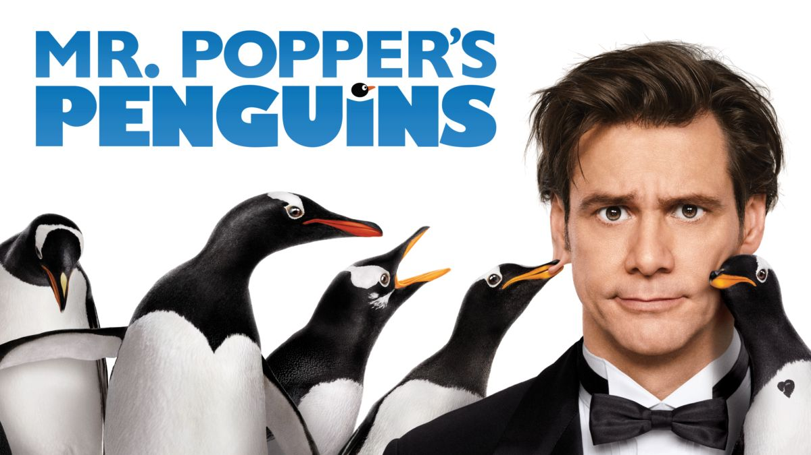

Mr. Popper's Penguins
What it's about
Tom Popper grew up having very little interaction with his father, who was off exploring the world. When he grows up, he spends most of time on his work and ignores his children. One day his father sends him an unusual gift: a penguin. Popper can't help but wonder why his father would send him a penguin. He tries to get rid of it, but accidentally orders five more. When his children and ex-wife show up to celebrate his son's birthday, the kids are taken with the penguins. And Popper finally gets to connect with his kids while his work suffers